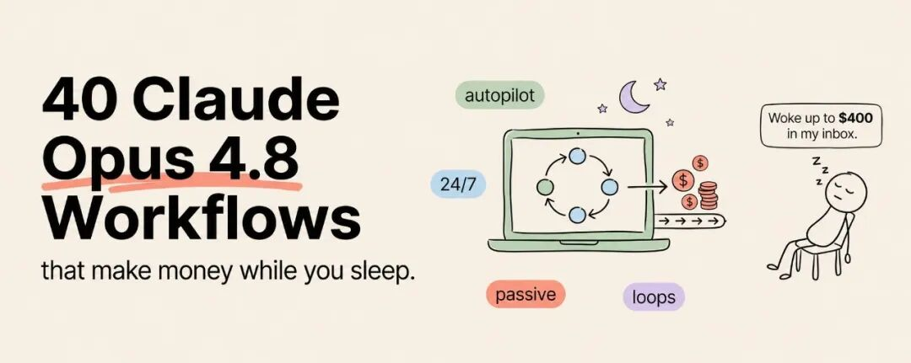

让你睡觉时也能赚钱的 40 个 Claude Opus 4.8 工作流
📌 编者按：这是一份难得「不画饼」的赚钱清单。作者一上来就把话说死：「睡觉时赚钱」不是钱从天上掉下来，而是干活的流程在你睡觉时替你跑——你照样得有东西卖、有人买，凡是动真钱、发给真人的环节都得你亲手按下确认键。40 个工作流分六类，国内读者真正能照搬的不到一半（很多依赖 Cowork、连接器、应用市场等海外生态），但「把一件你已经在做的事拆成流程，再交给模型重复跑」这个思路，对任何做内容、做服务、做产品的人都成立。挑这一篇读，是冲着它的清醒，不是冲着它的 40。

Article cover image
大多数人用 Claude Opus 4.8，是拿它来回答问题。
而有一小撮人，让它在自己睡觉的时候替自己经营生意。
差别不在模型。你们用的是同一个 Opus 4.8。差别在于：一拨人把它当搜索引擎，另一拨人把它当一支团队——把它接进一套系统里，让它按时去做调研、起草、整理、产出真东西，全程没人坐在键盘前盯着。
开始之前，先跟你把丑话说在前头，因为那些卖你美梦的人不会说。「睡觉时赚钱」不等于钱凭空冒出来，而是干活的流程在你睡觉时跑。系统替你干活，但你手里还得有东西能卖，还得有人愿意买。任何沾真钱、给真人发消息的事，每一次都得经你点头才放行。这不是束缚，这恰恰是一门正经生意和一场骗局的分界线。
把这点说清楚了，下面是 40 个你可以搭在 Opus 4.8 上、替你反复干活的工作流。我做了分类，方便你找到跟自己现有营生对得上的那几个。你不需要全部 40 个，你需要的是一个，认认真真搭好。
内容与受众类工作流
对任何已经在发东西的人来说，这几个工作流杠杆最高——因为它们是把你本来就在做的事翻倍。
1内容复用引擎。你写一篇长文或录一段长内容，一个定时工作流把它改写成一条推文长串、一组各自独立的帖子、一段 newsletter、一支短视频脚本——每一份都是按平台调性重写的，不是复制粘贴。一份输入，一周的内容，一夜跑完。只要你做任何内容，第一个就搭这个。2自动驾驶的垂直 newsletter。挑一个你懂的小众选题，一个调研 agent 帮你搜集本周进展、核实真伪、用你的口吻起草这一期。你就着咖啡读一遍、改一改、发出去。过去吃掉你一整周的那九成活儿，现在你睡觉时就办了。一份真有人群的垂直付费 newsletter，是实打实的可持续生意。3SEO 内容系统。丢进去一个关键词，吐出来一篇做过调研、有结构的初稿，还由一个批判 agent 拿它自己的来源做过事实核查。定时跑，你一觉醒来就攒下一堆初稿。诚实的部分是：你还得自己审，还得有个真有人来逛的网站。模型负责写，它不替你做营销。4引流诱饵工厂。把你的专业知识做成清单、模板、指南、迷你课。一个工作流从一个选题加一份大纲就能起草出每一份。你润色，你发布。源源不断的、真有用的免费引流诱饵，是每一个正经漏斗的入口——现在你能成批产出，而不是一个下午苦熬一份。5推文长串与图卡搭建器。喂它任何一篇文章，它产出一条紧凑的 thread 加一份图卡大纲，按平台排好版，钩子放在最前面。稳定输出的人才赢，而稳定本质上是个系统问题。这个工作流就是来解决它的。6「视频转一切」流水线。丢进一段视频或播客的文字稿，工作流产出节目摘要、带时间戳的高光片段、一篇成文文章，外加一组金句卡。一次录制，变成一周、横跨多种形式的素材。创作者发一次就停手，等于把大把价值丢在了桌上。7内容日历引擎。一个工作流围绕你的主题排出一个月的内容，把每一篇都起草出初版，再排进日程。你每周开局拿到的是一条满载的流水线，而不是一张白纸加一肚子焦虑。8互动回复起草助手。它替你读完那些需要回应的评论和私信，用你的口吻草拟得体的回复，排好队等你过目。互动是粉丝增长的方式，但它琐碎到大多数人中途就放弃了。这个工作流让它能长久坚持下去。你审核、你发布，起草的活儿已经做完了。服务生意类工作流
这几个工作流是：你把一个结果卖给客户，系统干重活。一个人能开一家代理公司，靠的就是这个。
1数据清洗服务。脏乱的表格到处都是，企业愿意花钱来修。靠 Claude in Excel 加代码执行工具，你搭一个工作流，吃进一个格式混乱的文件，吐出一个干净、有结构、带说明的文件。你卖的是结果，清洗交给系统。2「文档转成品」流水线。客户发来原始笔记、一段文字稿、或一份粗略的需求说明，你的工作流回他一份成型的 Word 文档、一套精致的演示稿、或一份排好版的 PDF。文件生成意味着输出就是真正的交付物，而不是一坨还要你重新排版的文字。这是一门实打实、能卖钱、还能在任何地方远程跑的服务。3简历与档案优化器。有人发来简历加一个目标岗位，你的工作流回他一份重写版，外加一份针对该岗位调过的个人档案。把它固化成一个定价产品。这活儿可重复，意味着可自动化，意味着它能突破你自己的工时上限往外扩。4社媒代运营工作流。把内容排期、起草、回复建议打包成一项服务，替客户运营。初稿按时生成，真正发出去的内容由你和客户共同确认。系统一旦搭好，一个人就能像模像样地同时接好几个客户。5客服知识 agent。把产品文档和常见问题喂进一个项目（Project），搭一个能对常见问题草拟准确答案的 agent。把它卖给一家被重复客服淹没的小企业。agent 负责起草，凡是有后果的回复，发出去之前都由人来确认。6来询筛选器。一个工作流读进每一条来询，按匹配度和紧急度分拣，草拟一条量身定制的首次回复，再把值得你花时间的那几条挑出来。它夜里读、夜里起草，你早上审核、把要紧的回复发出去。发送这件事，永远在你手上。7收件箱分拣服务。对一个忙人来说，一个能读完、分类、总结一天邮件、还能给例行邮件草拟回复的工作流，是真值钱的。你卖的是把别人的早晨还给他。没有人按下按钮，什么都发不出去。8「会议转行动」流水线。丢进一份会议文字稿，拿回一份干净的纪要、一份决议清单、一份带责任人的待办清单。当成服务卖，或者就给自己团队用。它把那件人人都忘记做的事，变成了自动会发生的事。9本地化服务。一个工作流把内容改写进另一种语言和语域——不是干巴巴的直译，而是真正落地到目标文化里的重写。如果你懂两个市场，这门服务企业愿意出高价，因为大多数译文都一股翻译腔。10编辑与校对服务。一个工作流帮你顺语法、收紧文句、标出含糊之处，回你一份带批注版加一份干净版。写作者、学生、企业都需要这个。你卖的是「打磨」，第一遍由系统交付。资产搭建类工作流
这几个搭的是你拥有的东西——活干完之后还在持续赚钱。这是整张清单里最接近真正被动收入的一类。
1做插件并出售。把你最好的工作流打包成插件，挂到应用市场上。资产搭一次，它在你睡觉时持续卖。这是货真价实的被动收入，因为产品本身就是那套系统。2做 Artifact 并出售。Claude 能做交互式工具：计算器、追踪器、生成器、迷你应用——现在还带持久化存储，能在用户两次访问之间记住数据。做一个真有用的，分享出去，让它长成一个全天候运转的产品，或一个引流诱饵。3数字产品引擎。把你的知识变成一门有结构的课、一本工作册、或一套模板包。一个工作流从你的大纲起草出每一个模块。产品归你所有，反复卖，而第一稿那部分重活，在你睡觉时就做完了。4微型 SaaS 原型。用 Claude Code 从一个点子做到一个带支付和分析、能跑起来的产品，哪怕你不是资深开发者。搭建比以往任何时候都快，而且资产是你的。鼓吹者略过不提的告诫是：上线是轻松的那两成，伺候真实用户才是另外那八成。但拥有一款软件的门，比以往任何时候都开得更大。5提示词与模板包。为某个具体职业做一套聚焦、真有用的提示词或模板包，然后卖。一个工作流帮你生成、测试、记录每一份。又窄又精，每次都赢过又宽又泛。6Notion 与系统模板生意。如果你擅长搭好系统，就把它们打包成别人能直接安装的模板。一个工作流帮你写文档、写安装指南、出营销文案。人们愿意花钱，跳过从零设计一套系统的麻烦。7垂直目录站。一个工作流在你熟悉的品类里调研、组织、撰写目录条目，并按时保持更新。一个有用的目录靠广告、付费收录、或联盟链接赚钱，而内容引擎不用你盯着也在跑。底线规则是：条目必须准确，否则这个目录就死了。8浏览器小工具。给某个特定人群做一个浏览器扩展或网页小工具，专治一个烦人的小问题——用 Claude Code 来搭，用 Claude 来写它的商店文案。一个把一件事做好的工具，能默默赚上好几年。销售与触达类工作流
这几个是在为「卖」做准备。贯穿始终的硬规矩是：系统准备，你来发。
1触达个性化引擎。一个工作流调研每一个潜在客户，草拟一条真正个性化的首条消息——不是套个名字的群发邮件。它夜里做调研、夜里起草，你审核、把值得发的那几条发出去。规模化的个性化是陌生触达的圣杯，而这已经是最接近圣杯的做法了——发送键牢牢攥在人手里。2线索调研与信息补全工作流。给它一串人名或公司名，它就给每一个搜集相关的公开背景，好让你的触达真知道自己在跟谁说话。烦人的调研变成一个夜间任务。至于你在哪里联系这些线索，是你亲自去联系，工作流只负责让你心里有数。3方案与报价生成器。一个工作流把一份简短的需求说明，变成一份按你的格式排好的、专业的方案或报价。它把你写方案要耗的几个小时，压缩成几分钟的审阅。定价你来定，报价你来兜底。4跟进序列起草器。它草拟得体、不像骚扰的跟进消息，按每段对话进行到哪一步来调。大多数生意是死于没跟进，不是死于没兴趣。草稿备好了，真正发出去的，你来定。5CRM 清理工作流。一个工作流读一份乱糟糟的联系人名单，把它标准化、用公开信息补全空缺、标出重复项。干净的数据让其他每一个销售工作流都跑得更好，而这正是人人都躲着不做的、不起眼的那一步。调研与情报类工作流
这几个不直接卖东西。它们让你成为所在领域里消息最灵通的操盘手——长期来看，这比任何单一产品都值钱。
1每日竞争简报。一个定时任务加一个 Live Artifact，每天清晨从你的连接器里拉数据，拼出一张仪表盘，告诉你竞品和市场一夜之间发生了什么。你不卖这份简报，但你能在竞争对手喝上咖啡之前就做出更敏锐的决策。这点优势会复利累积。2机会扫描器。把一个调研工作流对准你在意的领域，让它按时把空白、未被满足的需求、正在冒头的趋势一一挖出来。最好的生意都来自早早看见一个缺口。这个工作流让「看见缺口」从碰运气变成每天的习惯。3市场报告产品。搭一个工作流，按需产出一份具体、有价值的调研报告：一份市场扫描、一份竞品拆解、一份垂直趋势简报。当成定价产品卖。系统做分析，你来做销售。一个人开一家研究所，就是这么开的。4趋势监测器。一个工作流盯着你选定的信息源，一旦有真正相关的事情发生就提醒你，附一段为什么重要的简短说明。你不再淹没在信息流里，而是只收到那些真要紧的——还是在你睡觉时拼好的。5评价挖掘工作流。把它对准你所在市场里的公开评价和反馈，让它把规律提取出来：人们爱什么、恨什么、反复在要什么。这是产品的金矿，而几乎没人愿意下功夫系统地去搜集。系统在你睡觉时就做完了。运营与后台类工作流
这几个替你跑那些不光鲜的生意机器，省得你亲自上阵。它们不直接赚钱，它们省下的时间，让你能去赚钱。
1记账起草助手。一个工作流读你的交易流水导出文件，分类、标出异常、草拟一份月度总结。它不替你报税，也不替你动钱——这两件都牢牢握在你和你的会计师手里。但它把好几个小时的对账，变成你就着早餐做的一次审阅。2个人运营简报。每天清晨，一个定时任务把你的日程、待办、收件箱要点、和当天最重要的三件事，拼成一份简报。你不卖它。它只是让你成为那种每天一开局就已经心中有数的操盘手——一年下来，这比这张清单上大多数产品都值钱。3发票与合同起草器。一个工作流从一份简短的需求说明出发，按你的模板草拟发票、标准合同、和工作说明书。那些吃掉你整个下午的例行文书，被自动准备好了。你核对数字和条款，然后发出去。4SOP 生成器。一个工作流把「我是怎么做这件事的」变成一份干净、有据可查的标准作业流程（SOP）。这是那件秘密武器：你生成的每一份 SOP，都是一件你日后可以交给某个工作流或某个人去做的任务。它是那个能搭出你其他所有工作流的工作流。📌 编者注：注意作者把工作流分成两类气质——前 36 个直接对应收入（内容、服务、资产、销售、情报），后面运营类（37-40）「不直接赚钱，省下能赚钱的时间」。这个分法比「40 个躺赚秘籍」诚实得多。但国内读者要冷静：第 19 条（应用市场卖插件）、第 32 条（连接器拉数据）、第 22 条（带支付的 SaaS）严重依赖海外生态和支付，照搬成本不低；真正零门槛能上手的，是 1、6、16、40 这类「把已有素材换种形式」的纯产出型。
如何在这一周里真正搭出一个
40 个工作流是一份菜单，不是一张待办清单。想把它们全搭出来，正是你一个都搭不成的原因。
挑一个。挑那个最贴近你已经在做、或已经在卖的事的——因为一个自动化你懂的活儿的工作流，永远赢过一个为你只在脑子里想象的生意而设的工作流。
然后按这个顺序搭。第一，先用 Claude 把这件事手动做几遍，直到你摸清每一步。第二，把过程写下来，因为工作流不过就是一个写得足够清楚、能让 Claude 照着做的过程。第三，把它搭成一个带清晰指令和所需连接器的项目（Project）。第四，加一个批判环节，让输出不用你逐行检查也过得去。第五——而且只在它靠手动已经能稳定跑通之后——用 Cowork 给它排上定时，让它不用你也能跑。
诱惑在于直接跳到第五步，去自动化一个还没跑通的东西。忍住。自动化一个有毛病的过程，只会让有毛病的输出产得更快、还按时、还在你睡觉时——这是所有版本里最糟的一种。
让这一切站得住脚的两条铁律
凡是不可逆的事，都得经你点头。发消息、动钱、公开发布、删东西。这些系统都能草拟、能准备。按按钮的是你。永远是你。这不是为谨慎而谨慎，这是一个伺候你的工具和一个在你睡觉时让你出丑的工具之间的分界。
输出是你的责任。当你把自己的名字署在一份报告、一条评价、一条回复、或一份方案上，它真不真、好不好，是你的账。模型负责起草，担责的是你。那些靠这些工作流挣到长久收入的人，把模型的输出当成一个手快的初级帮手交来的、犀利的第一稿，而不是盖棺定论的金科玉律。
这两条铁律不是无聊的免责小字。它们是你的生意能熬过第三个月的原因。
真正的钱，在把它们叠起来
下面这一点，把赚一点的人和赚很多的人分开。
一个工作流有用。叠起来的工作流是一门生意。那些靠这个挣到大钱的操盘手，跑的不是某一个聪明的自动化。他们跑的是一条链：上一个的输出成为下一个的输入，整条链复利滚动。
想象一下。机会扫描器（33）挖出你市场里的一个缺口。市场报告产品（34）把这个缺口变成你能卖的东西。内容复用引擎（1）把报告的发现变成一周的帖子，吸引来正是需要它的那批买家。引流诱饵工厂（4）拿一个有用的东西，换走这些读者的邮箱。触达个性化引擎（27）给其中最热乎的那几个草拟一条量身定制的私信，由你审核、发出。方案生成器（29）把一条有意向的回复，变成一份干净的报价。而 SOP 生成器（40）把整条链记录成文，好让你能把其中几环交出去，或为下一个垂直领域重建一遍。
这不是七个各自为政的副业。这是一台机器，而你是唯一一个、只在真正需要判断的环节出现的人。每一个单独的工作流都很朴素。整条链却是一家基本自己运转的公司。
你不会在第一天就把整条链搭起来。你先搭一环，证明它跑得通，再接上它自然喂给的下一环。但「知道这条链才是目标」这件事，会改变你最先挑哪个工作流——因为你会开始挑那些能彼此衔接的环，而不是孤立的小把戏。
关于「睡觉时赚钱」的大实话
没有哪个工作流能凭空创造价值。
这里每一个赚钱的方式，都和工作自古以来赚钱的方式一样：产出人们想要的东西，再把它送到人们面前。变了的，是「产出」这一环——那个过去吃掉你夜晚和周末的环节——现在能不用你也跑起来了。这是一个巨大的转变。它不是一台魔法印钞机，谁要是跟你说它是，那他卖你的是美梦，不是系统。
靠这个赢的人，不是那些寻摸最省事配置的人。他们是那些拿自动化省回来的时间，去做那些仍然需要人的事：建关系、做判断、找下一个机会、把单子谈成。自动化扛下劳动，好让你把时间花在那些只有你才能做的事上。
大多数人会把这 40 个全读完，激动一阵，然后什么也不搭。
而一小撮人会在这一周挑一个，认真搭好，让它开始替自己干那些过去害自己睡不着的活儿。
这样干上半年，你不是更累了，你是在运行系统。
模型已经就绪。菜单在你手里。剩下唯一的问题是：今天，你最先搭哪一个。
📌 编者注：全文最有价值的是「叠起来」那一节——单个工作流是玩具，链式串联才是公司。但作者举的那条 33→34→1→4→27→29→40 的链，本质是「调研→出品→引流→转化→交付」的标准营销漏斗，AI 只是把每一环的人力成本压低了，并没有改变商业的底层逻辑。把它读成「AI 让做生意变简单了」是误读；正确的读法是「AI 让你能一个人跑完原来要一个团队的漏斗，前提是你本来就懂这套漏斗」。
📌 编辑部锐评：这篇值得读，恰恰因为它反高潮。市面上「睡后收入」的文章九成在卖幻觉，这篇却把最不性感的真相摆在台面上：模型只产出第一稿，你得审、得卖、得对结果负责；动钱和发消息永远卡在你的确认键之后。这份清醒，比那 40 个条目更值钱。
但对国内读者，得打几个折扣。一是生态依赖：Cowork 定时、连接器、应用市场卖插件、带支付的微型 SaaS，这些在墙内要么用不了、要么要换一整套基建（国产模型 + 自建定时 + 国内支付），照搬即踩坑。二是水分：40 条里有大量是同一个能力（「喂素材→换种形式产出」）的不同包装——内容复用（1）、视频转一切（6）、会议转行动（16）本质是一回事，真正独立的范式不超过十个。三是「卖结果」的服务类（9-18）门槛被低估了：客户要的是稳定和担责，而模型输出的方差恰恰是服务交付里最难抹平的成本，作者用一句「人来确认」轻轻带过，实际落地时这道人工关卡往往就是利润瓶颈。
我们的建议很朴素：别背菜单，挑一个你本就在做的环节，先手动跑通、再写成 SOP、最后才谈自动化——这正是作者自己给的第 1 到第 5 步。能照做这五步的人，不需要这 40 个；照不做的人，给 400 个也白搭。
参考文章：40 Claude Opus 4.8 Workflows That Make Money While You Sleep[1]
本文由 AI 辅助翻译，人工审校，资深编辑技术点评。译文仅供学习交流。